|
|
< Day Day Up > |
|
We now consider a classic application of depth-first search: decomposing a directed graph into its strongly connected components. This section shows how to do this decomposition using two depth-first searches. Many algorithms that work with directed graphs begin with such a decomposition. After decomposition, the algorithm is run separately on each strongly connected component. The solutions are then combined according to the structure of connections between components.
Recall from Appendix B that a strongly connected component of a directed graph G = (V, E) is a maximal set of vertices C ⊆ V such that for every pair of vertices u and v in C, we have both 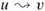 and 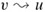; that is, vertices u and v are reachable from each other. Figure 22.9 shows an example.
Our algorithm for finding strongly connected components of a graph G = (V, E) uses the transpose of G, which is defined in Exercise 22.1-3 to be the graph GT = (V, ET), where ET = {(u, v) : (v, u) E}. That is, ET consists of the edges of G with their directions reversed. Given an adjacency-list representation of G, the time to create GT is O(V + E). It is interesting to observe that G and GT have exactly the same strongly connected components: u and v are reachable from each other in G if and only if they are reachable from each other in GT. Figure 22.9(b) shows the transpose of the graph in Figure 22.9(a), with the strongly connected components shaded.
The following linear-time (i.e., Θ(V + E)-time) algorithm computes the strongly connected components of a directed graph G = (V, E) using two depth-first searches, one on G and one on GT.
STRONGLY-CONNECTED-COMPONENTS (G)
1 call DFS (G) to compute finishing times f[u] for each vertex u
2 compute GT
3 call DFS (GT), but in the main loop of DFS, consider the vertices
in order of decreasing f[u] (as computed in line 1)
4 output the vertices of each tree in the depth-first forest formed in line 3 as a
separate strongly connected component
The idea behind this algorithm comes from a key property of the component graph GSCC = (VSCC, ESCC), which we define as follows. Suppose that G has strongly connected components C1, C2,..., Ck. The vertex set VSCC is {v1, v2,..., vk}, and it contains a vertex vi for each strongly connected component Ci of G. There is an edge (vi, vj) ∈ ESCC if G contains a directed edge (x, y) for some x ∈ Ci and some y ∈ Cj. Looked at another way, by contracting all edges whose incident vertices are within the same strongly connected component of G, the resulting graph is GSCC. Figure 22.9(c) shows the component graph of the graph in Figure 22.9(a).
The key property is that the component graph is a dag, which the following lemma implies.
Let C and C′ be distinct strongly connected components in directed graph G = (V, E), let u, v ∈ C, let u′, v′ ∈ C′, and suppose that there is a path 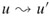 in G. Then there cannot also be a path 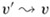 in G.
Proof If there is a path 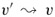 in G, then there are paths 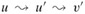 and 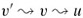 in G. Thus, u and v′ are reachable from each other, thereby contradicting the assumption that C and C′ are distinct strongly connected components.
We shall see that by considering vertices in the second depth-first search in decreasing order of the finishing times that were computed in the first depth-first search, we are, in essence, visiting the vertices of the component graph (each of which corresponds to a strongly connected component of G) in topologically sorted order.
Because STRONGLY-CONNECTED-COMPONENTS performs two depth-first searches, there is the potential for ambiguity when we discuss d[u] or f[u]. In this section, these values always refer to the discovery and finishing times as computed by the first call of DFS, in line 1.
We extend the notation for discovery and finishing times to sets of vertices. If U ⊆ V , then we define d(U) = minu ∈ U {d[u]} and f(U) = maxu ∈ U {f[u]}. That is, d(U) and f(U) are the earliest discovery time and latest finishing time, respectively, of any vertex in U.
The following lemma and its corollary give a key property relating strongly connected components and finishing times in the first depth-first search.
Let C and C′ be distinct strongly connected components in directed graph G = (V, E). Suppose that there is an edge (u, v) E, where u ∈ C and v ∈ C′. Then f (C) > f(C′).
Proof There are two cases, depending on which strongly connected component, C or C′, had the first discovered vertex during the depth-first search.
If d(C) < d(C′), let x be the first vertex discovered in C. At time d[x], all vertices in C and C′ are white. There is a path in G from x to each vertex in C consisting only of white vertices. Because (u, v) ∈ E, for any vertex w ∈ C′, there is also a path at time d[x] from x to w in G consisting only of white vertices: 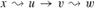. By the white-path theorem, all vertices in C and C′ become descendants of x in the depth-first tree. By Corollary 22.8, f[x] = f(C) > f(C′).
If instead we have d(C) > d(C′), let y be the first vertex discovered in C′. At time d[y], all vertices in C′ are white and there is a path in G from y to each vertex in C′ consisting only of white vertices. By the white-path theorem, all vertices in C′ become descendants of y in the depth-first tree, and by Corollary 22.8, f[y] = f(C′). At time d[y], all vertices in C are white. Since there is an edge (u, v) from C to C′, Lemma 22.13 implies that there cannot be a path from C′ to C. Hence, no vertex in C is reachable from y. At time f[y], therefore, all vertices in C are still white. Thus, for any vertex w ∈ C, we have f[w] > f[y], which implies that f(C) > f(C′).
The following corollary tells us that each edge in GT that goes between different strongly connected components goes from a component with an earlier finishing time (in the first depth-first search) to a component with a later finishing time.
Let C and C′ be distinct strongly connected components in directed graph G = (V, E). Suppose that there is an edge (u, v) ∈ ET, where u ∈ C and v ∈ C′. Then f(C) < f(C′).
Proof Since (u, v) ∈ ET, we have (v, u) ∈ E. Since the strongly connected components of G and GT are the same, Lemma 22.14 implies that f(C) < f(C′).
Corollary 22.15 provides the key to understanding why the STRONGLY-CONNECTED-COMPONENTS procedure works. Let us examine what happens when we perform the second depth-first search, which is on GT. We start with the strongly connected component C whose finishing time f(C) is maximum. The search starts from some vertex x ∈ C, and it visits all vertices in C. By Corollary 22.15, there are no edges in GT from C to any other strongly connected component, and so the search from x will not visit vertices in any other component. Thus, the tree rooted at x contains exactly the vertices of C. Having completed visiting all vertices in C, the search in line 3 selects as a root a vertex from some other strongly connected component C′ whose finishing time f(C′) is maximum over all components other than C. Again, the search will visit all vertices in C′, but by Corollary 22.15, the only edges in GT from C′ to any other component must be to C, which we have already visited. In general, when the depth-first search of GT in line 3 visits any strongly connected component, any edges out of that component must be to components that were already visited. Each depth-first tree, therefore, will be exactly one strongly connected component. The following theorem formalizes this argument.
STRONGLY-CONNECTED-COMPONENTS (G) correctly computes the strongly connected components of a directed graph G.
Proof We argue by induction on the number of depth-first trees found in the depth-first search of GT in line 3 that the vertices of each tree form a strongly connected component. The inductive hypothesis is that the first k trees produced in line 3 are strongly connected components. The basis for the induction, when k = 0, is trivial.
In the inductive step, we assume that each of the first k depth-first trees produced in line 3 is a strongly connected component, and we consider the (k + 1)st tree produced. Let the root of this tree be vertex u, and let u be in strongly connected component C. Because of how we choose roots in the depth-first search in line 3, f[u] = f(C) > f(C′) for any strongly connected component C′ other than C that has yet to be visited. By the inductive hypothesis, at the time that the search visits u, all other vertices of C are white. By the white-path theorem, therefore, all other vertices of C are descendants of u in its depth-first tree. Moreover, by the inductive hypothesis and by Corollary 22.15, any edges in GT that leave C must be to strongly connected components that have already been visited. Thus, no vertex in any strongly connected component other than C will be a descendant of u during the depth-first search of GT. Thus, the vertices of the depth-first tree in GT that is rooted at u form exactly one strongly connected component, which completes the inductive step and the proof.
Here is another way to look at how the second depth-first search operates. Consider the component graph (GT)SCC of GT. If we map each strongly connected component visited in the second depth-first search to a vertex of (GT)SCC, the vertices of (GT)SCC are visited in the reverse of a topologically sorted order. If we reverse the edges of (GT)SCC, we get the graph ((GT)SCC)T. Because ((GT)SCC)T = GSCC (see Exercise 22.5-4), the second depth-first search visits the vertices of GSCC in topologically sorted order.
How can the number of strongly connected components of a graph change if a new edge is added?
Show how the procedure STRONGLY-CONNECTED-COMPONENTS works on the graph of Figure 22.6. Specifically, show the finishing times computed in line 1 and the forest produced in line 3. Assume that the loop of lines 5-7 of DFS considers vertices in alphabetical order and that the adjacency lists are in alphabetical order.
Professor Deaver claims that the algorithm for strongly connected components can be simplified by using the original (instead of the transpose) graph in the second depth-first search and scanning the vertices in order of increasing finishing times. Is the professor correct?
Prove that for any directed graph G, we have ((GT)SCC)T = GSCC. That is, the transpose of the component graph of GT is the same as the component graph of G.
Give an O(V + E)-time algorithm to compute the component graph of a directed graph G = (V, E). Make sure that there is at most one edge between two vertices in the component graph your algorithm produces.
Given a directed graph G = (V, E), explain how to create another graph G′ = (V, E′) such that (a) G′ has the same strongly connected components as G, (b) G′ has the same component graph as G, and (c) E′ is as small as possible. Describe a fast algorithm to compute G′.
A directed graph G = (V, E) is said to be semiconnected if, for all pairs of vertices u, v ∈ V , we have 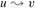 or 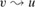. Give an efficient algorithm to determine whether or not G is semiconnected. Prove that your algorithm is correct, and analyze its running time.
A depth-first forest classifies the edges of a graph into tree, back, forward, and cross edges. A breadth-first tree can also be used to classify the edges reachable from the source of the search into the same four categories.
Prove that in a breadth-first search of an undirected graph, the following properties hold:
There are no back edges and no forward edges.
For each tree edge (u, v), we have d[v] = d[u] + 1.
For each cross edge (u, v), we have d[v] = d[u] or d[v] = d[u] + 1.
Prove that in a breadth-first search of a directed graph, the following properties hold:
There are no forward edges.
For each tree edge (u, v), we have d[v] = d[u] + 1.
For each cross edge (u, v), we have d[v] ≤ d[u] + 1.
For each back edge (u, v), we have 0 ≤ d[v] ≤ d[u].
Let G = (V, E) be a connected, undirected graph. An articulation point of G is a vertex whose removal disconnects G. A bridge of G is an edge whose removal disconnects G. A biconnected component of G is a maximal set of edges such that any two edges in the set lie on a common simple cycle. Figure 22.10 illustrates these definitions. We can determine articulation points, bridges, and biconnected components using depth-first search. Let Gπ = (V, Eπ) be a depth-first tree of G.
Prove that the root of Gπ is an articulation point of G if and only if it has at least two children in Gπ.
Let v be a nonroot vertex of Gπ. Prove that v is an articulation point of G if and only if v has a child s such that there is no back edge from s or any descendant of s to a proper ancestor of v.
Let
Show how to compute low[v] for all vertices v ∈ V in O(E) time.
Show how to compute all articulation points in O(E) time.
Prove that an edge of G is a bridge if and only if it does not lie on any simple cycle of G.
Show how to compute all the bridges of G in O(E) time.
Prove that the biconnected components of G partition the nonbridge edges of G.
Give an O(E)-time algorithm to label each edge e of G with a positive integer bcc[e] such that bcc[e] = bcc[e′] if and only if e and e′ are in the same biconnected component.
An Euler tour of a connected, directed graph G = (V, E) is a cycle that traverses each edge of G exactly once, although it may visit a vertex more than once.
Show that G has an Euler tour if and only if in-degree (v) = out-degree (v) for each vertex v ∈ V.
Describe an O(E)-time algorithm to find an Euler tour of G if one exists. (Hint: Merge edge-disjoint cycles.)
Let G = (V, E) be a directed graph in which each vertex u ∈ V is labeled with a unique integer L(u) from the set {1, 2,..., |V|}. For each vertex u ∈ V, let 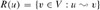 be the set of vertices that are reachable from u. Define min(u) to be the vertex in R(u) whose label is minimum, i.e., min(u) is the vertex v such that L(v) = min {L(w) : w ∈ R(u)}. Give an O(V + E)-time algorithm that computes min(u) for all vertices u ∈ V.
|
|
< Day Day Up > |
|